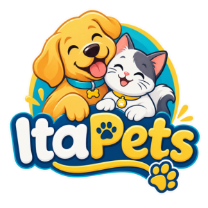
Tudo o que seu pet precisa em um só lugar!
Nossos Produtos
Clique na imagem ou na descrição do produto para abrir a página de detalhes em uma nova guia.
Ração Premium para Cães
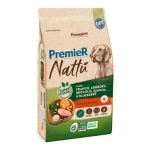
Ração Seca Premier Nattu para Cães Adultos Sabor Natural 12kg
Preço: R$ 274,90
Arranhador para Gatos
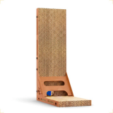
Arranhador em torre com bolinha para diversão do seu gato
Preço: R$ 47,90
Coleira Ajustável
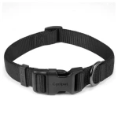
Coleira de nylon super resistente com trava de segurança.
Preço: R$ 93,90
Brinquedo Osso de Borracha
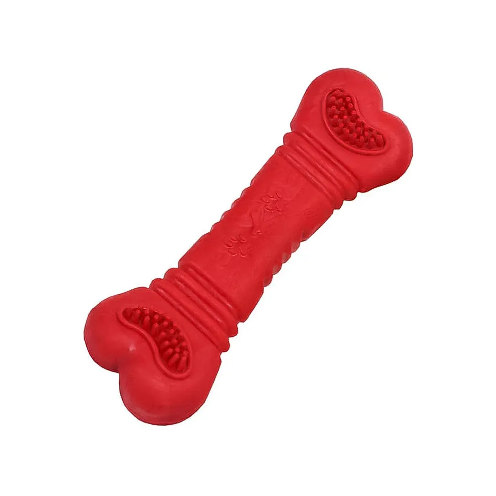
Brinquedo atóxico ideal para fortalecer os dentes do seu cão.
Preço: R$ 12,90
Shampoo Neutro para Pets
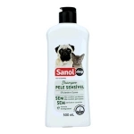
Shampoo de 500ml indicado para cães e gatos de pele sensível.
Preço: R$ 45,90
Ração Nutropica Gourmet para Calopsitas
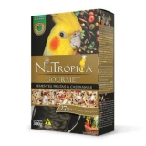
Ração com ingredientes naturais de alta qualidade para calopsitas 300g
Preço: R$ 49,90
Caixa de Transporte
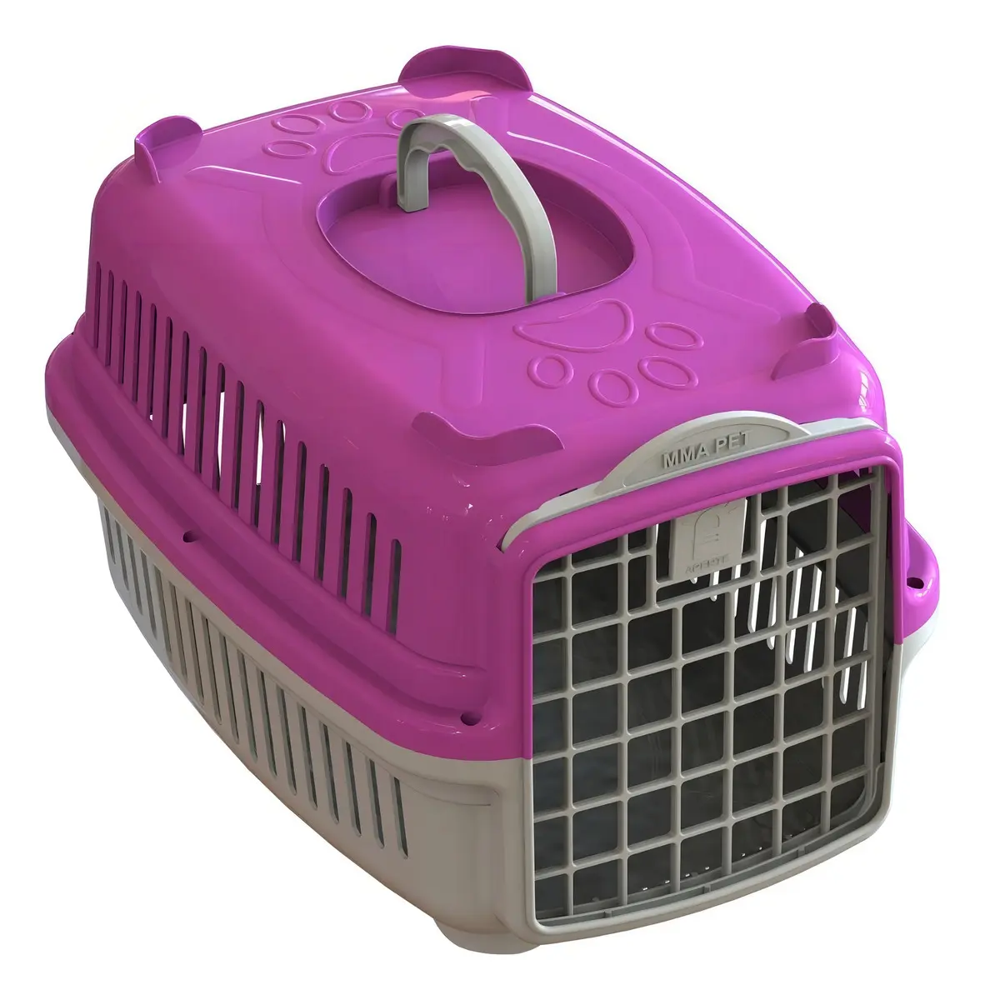
Caixa resistente para viagens puras e seguras de pequenos animais.
Preço: R$ 78,90
Roda para Roedores
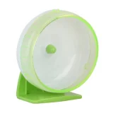
Roda para roedores de 14cm de diâmetro.
Preço: R$ 31,90
Areia Sanitária Viva Verde para Gatos
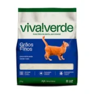
Pacote de 4kg de areia fina biodegradável com alta absorção.
Preço: R$ 59,90
Petisco Natural para Cães
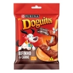
Pacote com tiras de carne desidratada 100% natural.
Preço: R$ 8,90
Escova Rasqueadeira
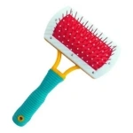
Remove pelos mortos e evita nós nos pelos de cães e gatos.
Preço: R$ 23,90
Aquário de Vidro
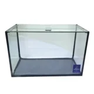
Aquário compacto com acabamento em silicone atóxico.
Preço: R$ 159,90